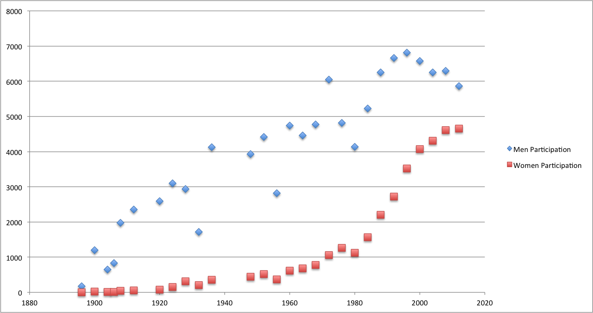

Avinash Gosavi - 01007598 - agosavi - agosa001@odu.edu
HomeWork 1
Chart showing growth in men vs women participation over the years

How I built the chart
- Chart was built using Microsoft Excel
- Raw data was used without any manipulation
Answer to class work 1 questions
List 3 other questions that you could ask of this data as given.
- Why did count reduced in all categories during 1976-1980
- Why number of Women participation doubled between 1988-2000
- What was done to stabilize no of sports in Olymics may be in 2000.
List 3 questions that you could ask of this data if you derived some attributes, that is manipulated or aggregated the given data in some way.
- What is the average no of participants per country over the year.
- What is the average no of participants per event over the year.
- Can't think of a third one.
List 3 questions that you could ask if you had access to some additional data that's not given directly in the table.
- Total number of countries in world.
- Further categorization in events.
- Separate excel showing country wise participation.